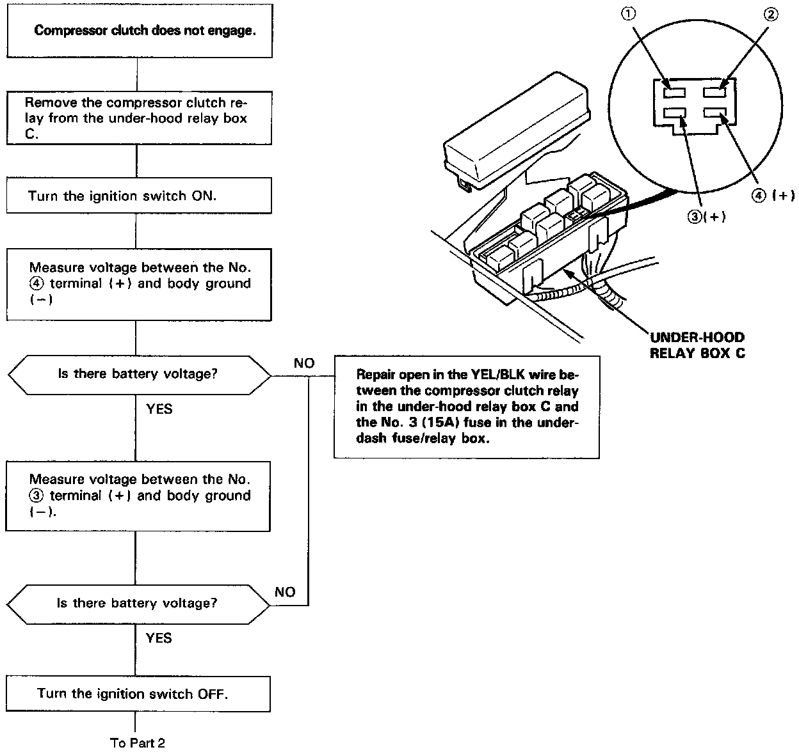
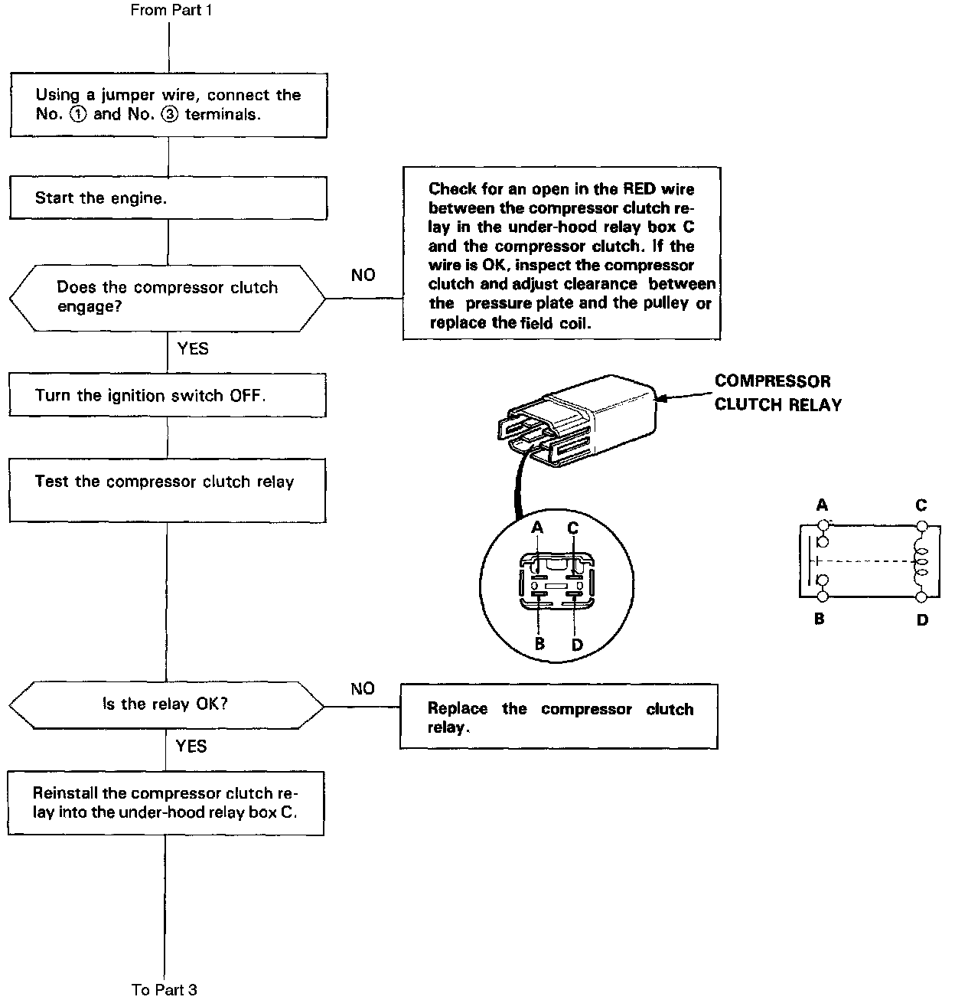
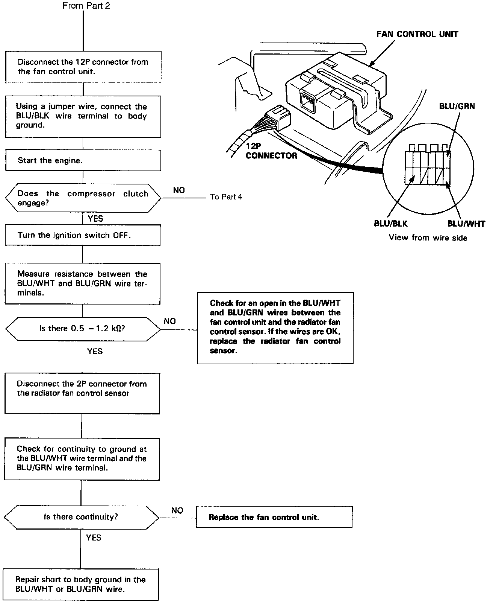
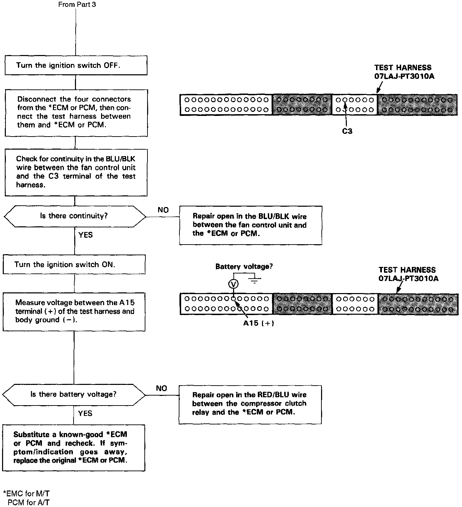

Operation CHARM
: Car repair manuals for everyone.
Home
>>
Acura
>>
1995
>>
Legend Coupe V6-3206cc 3.2L SOHC FI
>>
Repair and Diagnosis
>>
Heating and Air Conditioning
>>
Relays and Modules - HVAC
>>
Control Module HVAC
>>
Testing and Inspection
>>
Diagnosis By Symptom - Manual Heating and Air Conditioning
>>
A/C Compressor
A/C Compressor
Compressor, Part 1 Of 4:

Compressor, Part 2 Of 4:

Compressor, Part 3 Of 4:

Compressor, Part 4 Of 4:
